Menu: Dimenzija > Vodoravno
Shortcut: D, H
Commands: dimhor | dimhorizontal | dh

Opis:
To orodje deluje podobno kot orodje zarotirana kotiranja.
Edina razlika je, da je kot vnaprej nastavljen na 0 stopinj (vodoravno) in ga ni mogoče spreminjat.